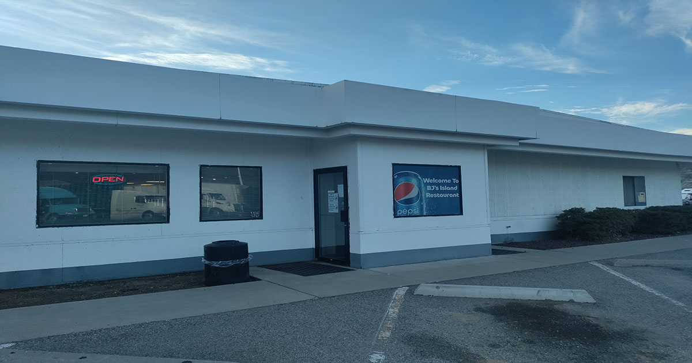
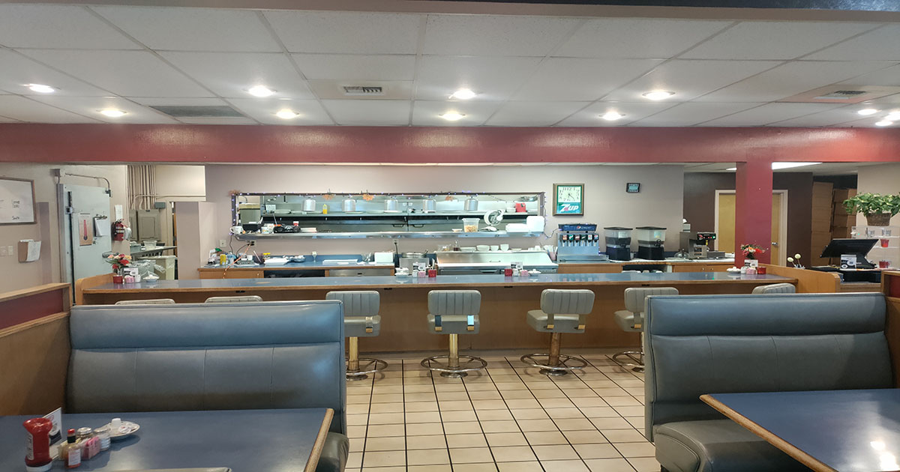
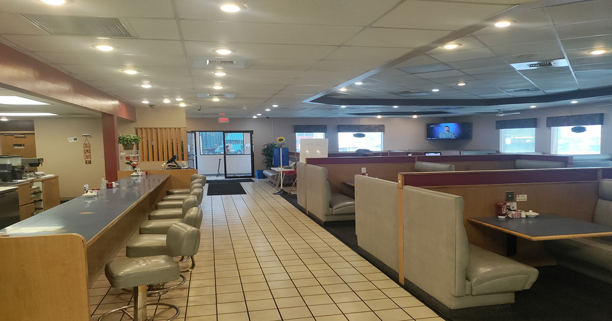
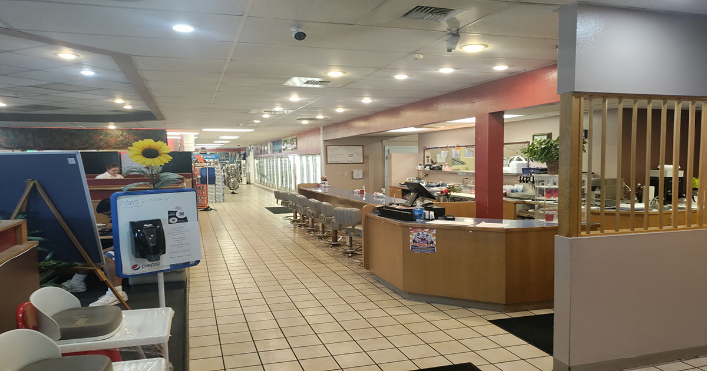
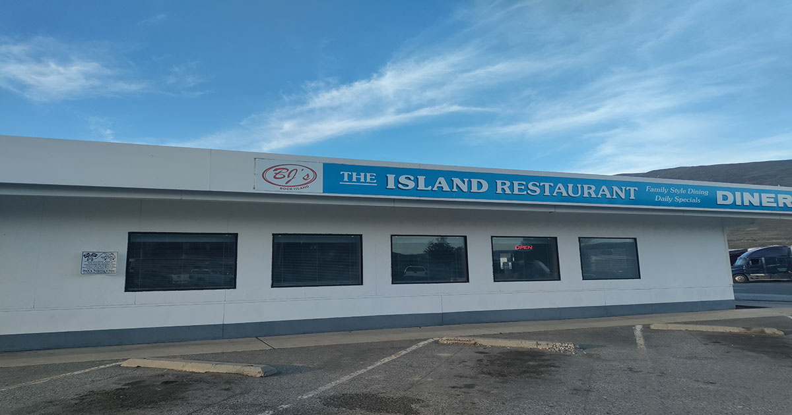

Welcome to BJ's The Island Restuarant!
BJ's Diner offers a wide range of delicious American-style dishes in a cozy atmosphere. BJ's Diner offers a wide range of delicious American-style dishes in a cozy atmosphere. BJ's Diner is in Rock Island, Washington. It is part of the Shell Truck Stop so that truckers and travelers have a nice place to take a break and eat some homecooked meals. I love it as it is only not even a 5-minute walk from my house there. The staff is nice, and the food is delicious and quite filling. It's not expensive at all to eat there. In fact, it’s what you expect from any diner to not pay a lot, get a lot of food, usually plenty that I always have leftovers. Also, you get nice homecooked meals. It's comforting really.
    